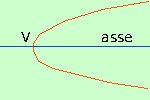

|
 veramente la parabola con asse orizzontale sara' il prossimo argomento, ma per i nostri ragionamenti basta pensarne l'equazione e la rappresentazione grafica equazione x = ay2 + by + c Di solito e' raro che in un problema si chiedano le intersezioni fra due parabole una con asse verticale ed una con asse orizzontale perche'l'equazione risolvente del sistema che si ottiene e' di quarto grado. Quindi avremo che le possibili soluzioni sono le stesse che abbiamo gia' visto per l' intersezione fra una parabola ed una circonferenza (non saranno possibili pero' le 4 soluzioni due a due coincidenti) |